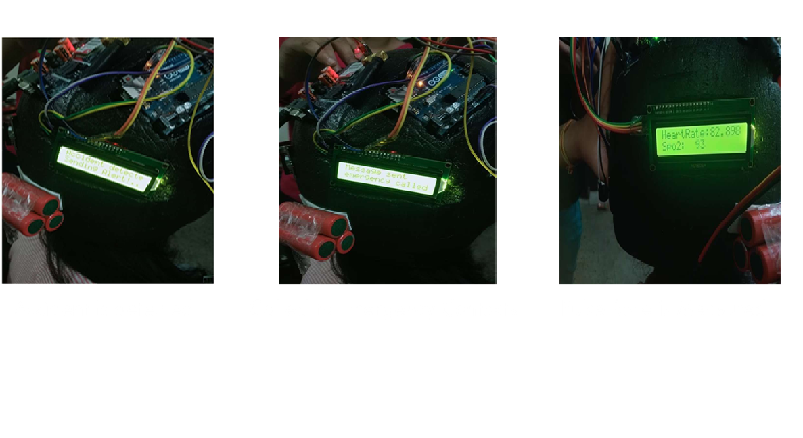
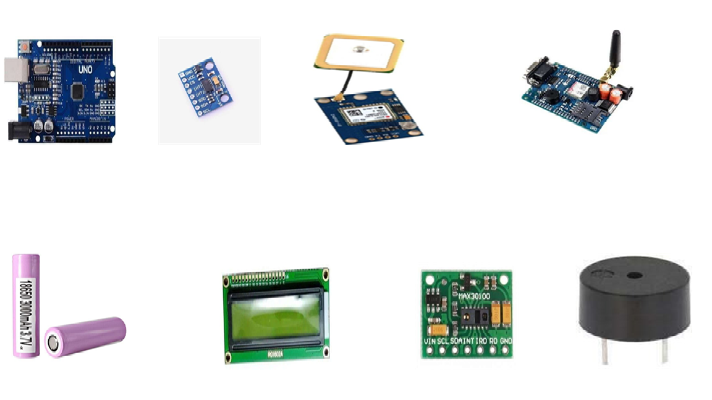

Smart Safety Helmet
This project is funded by the Department of Science and Technology (DST), Government of India.
The smart safety helmet is a promising development in workplace and road safety. It is equipped with sensors and a microcontroller that detect accidents and monitor the rider's health.
Abstract
The smart safety helmet project aims to prevent injuries and save lives by detecting accidents and monitoring the rider's health. Equipped with sensors, it can detect crashes, measure heart rate, and send emergency alerts to contacts. This technology can significantly enhance safety for riders.
Motivation
Motorcycle accidents are a major public health concern. Many riders do not wear proper helmets, leading to severe injuries and fatalities. A smart helmet can provide real-time safety features to reduce risks and improve emergency response.
Literature Review
Studies indicate that smart helmets can reduce head injuries by up to 50%. Research from universities highlights the benefits of accident detection and real-time health monitoring in improving emergency response times.
Aim & Objectives
The primary objectives of this project are:
- Develop an accident detection unit that alerts emergency contacts.
- Incorporate a pulse sensor to monitor the rider's health.
- Enable real-time GPS tracking for location-based alerts.
Proposed System
The helmet consists of two main units:
- Accident Detection Unit: Uses an accelerometer, GPS, and microcontroller to detect crashes and send alerts.
- Pulse Monitoring Unit: Measures heart rate and displays data on an LCD.
- Wireless Communication: Sends real-time data to a mobile app for monitoring.
Methodology
The helmet development follows these steps:
- Research on motorcycle safety and existing solutions
- Designing a prototype with integrated sensors
- Implementing wireless data transmission
- Testing in a controlled environment to validate its effectiveness
Components Used
- Arduino Uno
- MPU6050 Accelerometer
- NEO6M GPS Module
- SIM900 GSM Module
- MAX30100 Pulse Oximeter
- LCD Display
- Buzzer
- ESP8266 Wi-Fi Module
- Rechargeable Battery with Solar Charging
Block Diagrams
The smart helmet system is divided into two main sections:
- Accident Detection Block Diagram
- Pulse Monitoring Block Diagram

Experimental Results
Accident detection was successfully tested, and emergency contacts were notified immediately. Pulse rate measurement was accurate, ensuring real-time health monitoring.
Conclusion
The smart safety helmet enhances rider protection by detecting accidents and providing immediate emergency alerts. With further development, it can revolutionize road safety and workplace security.
Future Scope
- Integration of alcohol detection system
- AI-based road hazard detection
- Field testing and deployment in real-world scenarios
- Mobile app integration for health monitoring
- Enhanced voice-assisted emergency response
Patent Notice
This project is patented. Any unauthorized reproduction, copying, or use of this design without proper authorization will be subject to legal action and penalties.
Acknowledgment
I Express My sincere gratitude to the Department of Science and Technology (DST), Government of India, for their invaluable support and funding for this project. Their encouragement and financial assistance have played a crucial role in the successful development of this innovation.
Back to Home